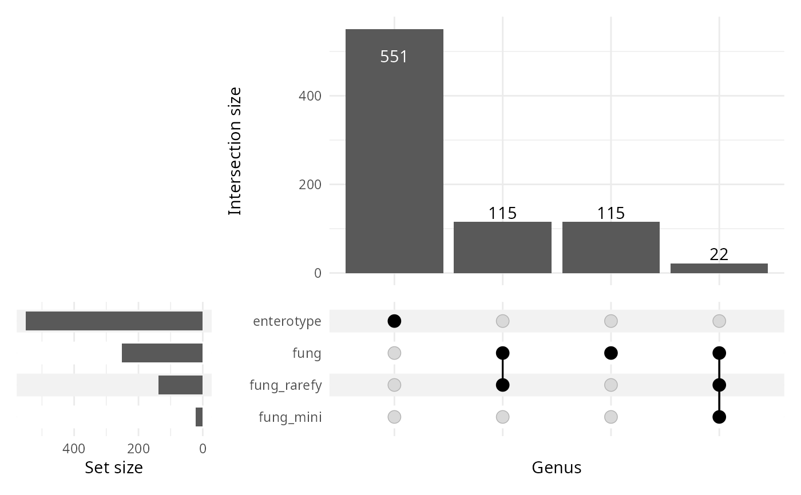
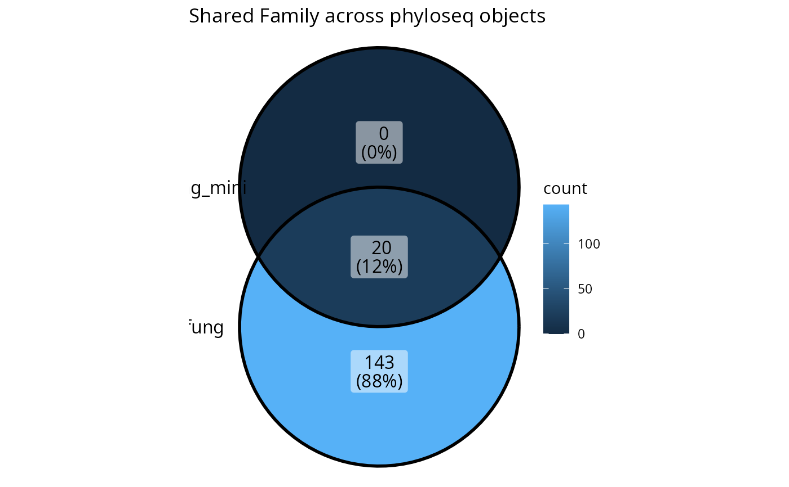

UpSet or Venn plot of shared taxonomic values across phyloseq objects
Source:R/formattable_lpq.R
upset_lpq.RdCreate an UpSet plot (or Venn diagram) showing the shared taxonomic values at a specified rank across all phyloseq objects in a list_phyloseq.
Arguments
- x
(required) A list_phyloseq object.
- tax_rank
(character, required) The name of the taxonomic rank column present in the
@tax_tableslot of each phyloseq object. For example, "Genus", "Family", or "Species".- plot_type
(character, default "auto") Type of plot to generate. One of "auto", "upset", or "venn". If "auto", uses Venn diagram for 4 or fewer phyloseq objects, UpSet plot otherwise.
- remove_na
(logical, default TRUE) If TRUE, remove NA values from the taxonomic rank before computing intersections.
- ...
Additional arguments passed to
ComplexUpset::upset()orggVennDiagram::ggVennDiagram().
Details
This function extracts the unique values for the specified taxonomic rank from each phyloseq object and creates a visualization showing the intersections between them. UpSet plots are generally better for visualizing complex intersections with more than 4 sets, while Venn diagrams work well for 2-4 sets.
Examples
data("enterotype", package = "phyloseq")
lpq <- list_phyloseq(list(
fung = data_fungi,
fung_mini = data_fungi_mini,
fung_rarefy = rarefy_even_depth(data_fungi),
enterotype = enterotype
))
#> You set `rngseed` to FALSE. Make sure you've set & recorded
#> the random seed of your session for reproducibility.
#> See `?set.seed`
#> ...
#> 1014OTUs were removed because they are no longer
#> present in any sample after random subsampling
#> ...
upset_lpq(lpq, plot_type = "upset")

lpq2 <- list_phyloseq(list(
fung = data_fungi,
fung_mini = data_fungi_mini
))
upset_lpq(lpq2, tax_rank = "Family")
